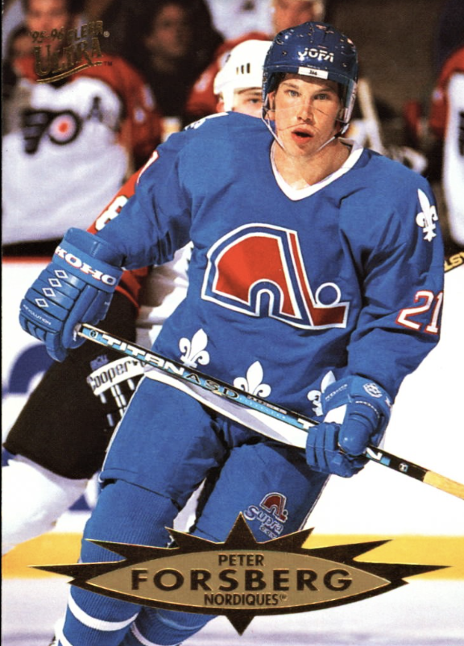
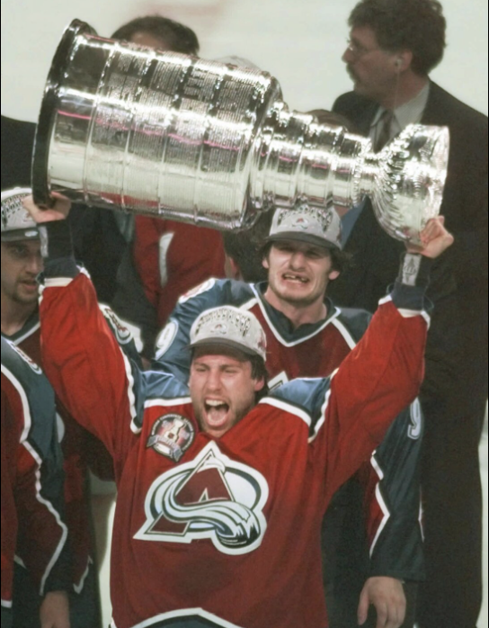
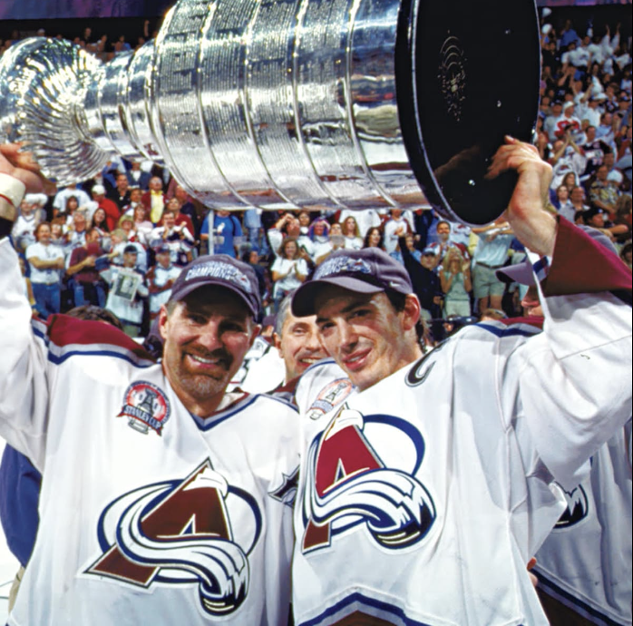
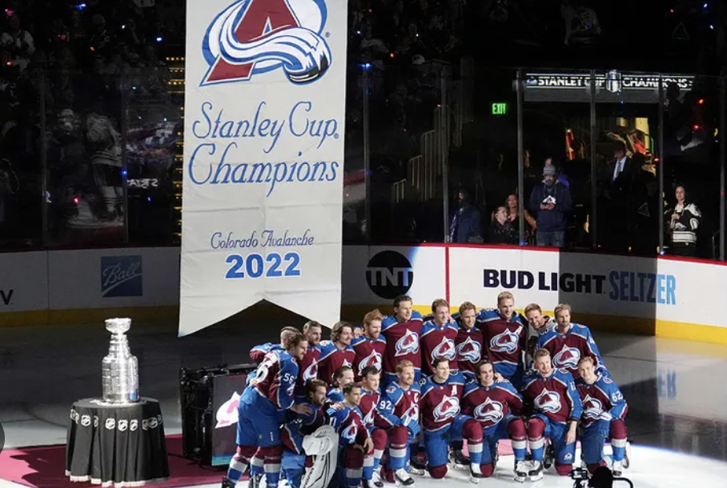
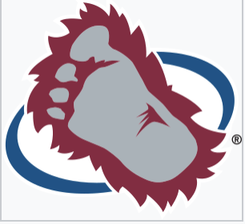
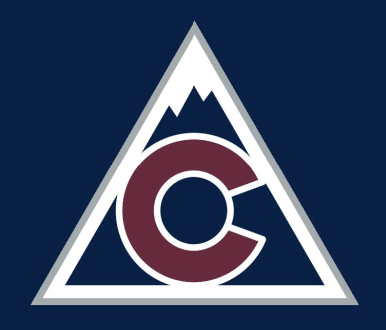
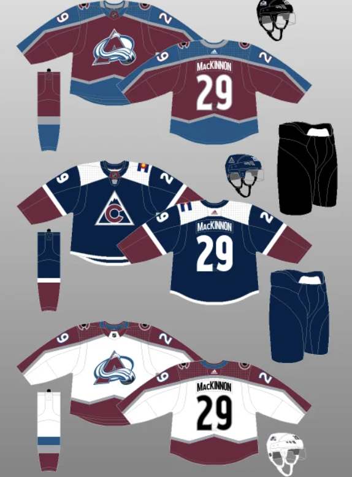
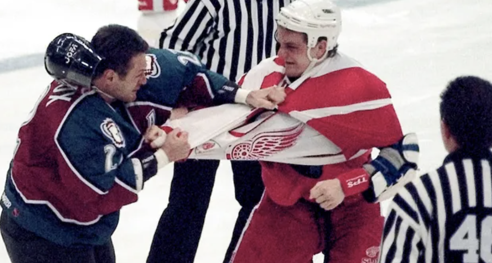

Quebec Nordiques:
The Quebec Nordiques were one of the World Hockey Association's (WHA) original teams when the league began play in 1972. Though first awarded to a group in San Francisco, the team was subsequently sold and moved to Quebec City prior to the start of the league's opening.[5] During their seven WHA seasons, the Nordiques won the Avco World Trophy once, in 1977, and lost the finals once, in 1975.[6] In 1979, the franchise entered the NHL, along with the WHA's Edmonton Oilers, Hartford Whalers, and Winnipeg Jets.[7]
After making the postseason for seven consecutive years, from 1981 to 1987, the Nordiques started to decline. From 1987–88 to 1991–92, the team finished last in their division every season, with three of those finishes landing them last in the league. This included a dreadful 12-win season in 1989–90 that is still the worst in franchise history.[8] As a result, the team earned three consecutive first overall draft picks, used to select Mats Sundin (1989), Owen Nolan (1990), and Eric Lindros (1991).[9][10] Lindros made it clear he did not wish to play for the Nordiques,[11] to the extent he did not wear the team's jersey for the press photographs, only holding it when it was presented to him.[12] On advice from his mother, he refused to sign a contract and began a holdout that lasted over a year. On June 30, 1992, he was traded to the Philadelphia Flyers in exchange for five players, the rights to Swedish prospect Peter Forsberg, two first-round draft picks, and US$15 million.[13] The Eric Lindros trade turned the moribund Nordiques into a Stanley Cup contender almost overnight, and is seen in hindsight as one of the most one-sided deals in sports history.[14] In the first season after the trade, 1992–93, the Nordiques reached the playoffs for the first time in six years.[15] Two years later, they won the Northeast Division and had the second best regular season record during the lockout-shortened season.[16]
While the team experienced on-ice success, it spent most of its first 23 years struggling financially. Quebec City was by far the smallest market in the NHL.[17] and the changing financial environment in the NHL made things even more difficult. In 1995, team owner Marcel Aubut asked for a bailout from Quebec's provincial government[18] as well as a new publicly funded arena.[17] The bailout fell through, and Aubut subsequently began talks with COMSAT Entertainment Group in Denver, which already owned the Denver Nuggets.[19] In May 1995, COMSAT announced an agreement in principle to purchase the team.[20] The deal became official on July 1, 1995, and 12,000 season tickets were sold in the 37 days after the announcement of the move.[20]
COMSAT considered several names for the team, including "Extreme," "Blizzards," and "Black Bears." It also debated whether to brand the team as a Denver team or as a regional franchise representing either Colorado or the entire Rocky Mountain region. Initially, COMSAT filed copyright protection for "Black Bears",[21] but reportedly decided to name the team Rocky Mountain Extreme. When The Denver Post leaked the intended name, fan reaction was so negative that COMSAT reconsidered and chose the name Colorado Avalanche.[22] The new name was revealed on August 10, 1995.[20] With the move, the newly relocated team transferred to the Pacific Division of the Western Conference.[23]
Avalanche 1995-Present:
After purchasing the team, COMSAT organized its Denver sports franchises under a separate subsidiary, Ascent Entertainment Group Inc., which went public in 1995. COMSAT retained an 80% controlling interest, with the other 20% available on NASDAQ.[24] The Avalanche played their first game in the McNichols Sports Arena in Denver on October 6, 1995, winning 3–2 against the Detroit Red Wings. It marked a return of the NHL to Denver after an absence of 13 years, when the Colorado Rockies (not to be confused with the Major League Baseball team of the same name) moved to New Jersey to become the New Jersey Devils. Valeri Kamensky scored the first goal as the Avalanche, as well as the game-winning goal in the final minutes.[25] Led on the ice by captain Joe Sakic, forward Peter Forsberg, and defenseman Adam Foote and with Pierre Lacroix as the general manager and Marc Crawford as the head coach, the Avalanche became stronger when All-Star Montreal Canadiens goaltender Patrick Roy joined the team. Roy joined the Avalanche on December 6, 1995, together with ex-Montreal captain Mike Keane in a trade for Jocelyn Thibault, Martin Rucinsky, and Andrei Kovalenko.[26]
1995-96 Stanley Cup Champions
The Avalanche finished the regular season with a 47–25–10 record for 104 points, won the Pacific Division, and finished second in the Western Conference. Colorado progressed to the playoffs, defeating the Vancouver Canucks, Chicago Blackhawks, and the Presidents' Trophy-winning Detroit Red Wings in the Western Conference Finals, all in six games. In the Stanley Cup Finals, the Avalanche met the Florida Panthers, who were also in their first Finals. The Avalanche swept the series 4–0. In Game 4, during the third overtime and after more than 100 minutes of play with no goals, defenseman Uwe Krupp scored to claim the franchise's first Stanley Cup.[27] Joe Sakic was the playoff's scoring leader with 34 points (18 goals and 16 assists),[28] winning the Conn Smythe Trophy. The 1995–96 Cup was the first major professional championship won by a Denver team. The Avalanche are the only team in NHL history to win the Stanley Cup their first season after a move, and only the second team to win a championship their first season after a move in any of the four major North American sports leagues, following the NFL's Washington Commanders. They also became the second team from the WHA to win the Cup.[20] With the Cup win, Russians Alexei Gusarov and Valeri Kamensky, and Swede Peter Forsberg became members of the Triple Gold Club, the exclusive group of ice hockey players who have won Olympic gold, World Championship gold, and the Stanley Cup.[29]
In 1996–97, Colorado won the Pacific Division again as well as the Presidents' Trophy for finishing the regular season with the best record in the NHL, at 49–24–9 for 107 points.[30] The team was also the NHL's best scoring with an average of 3.38 goals scored per game. The Avalanche met the two lowest scorers of the Western Conference in the first two rounds of the playoffs, the Chicago Blackhawks and the Edmonton Oilers, defeating them in six and five games, respectively.[31] During a rematch of the previous year Western Conference Finals, the Avalanche lost to the Detroit Red Wings in six games.[31] Detroit went on to sweep the Stanley Cup Finals just as the Avalanche had done the year before.[31] Sandis Ozolinsh was elected for the NHL's first All-Star team at the end of the season.[32]
As a free agent during the summer of 1997, Joe Sakic signed a three-year, $21 million offer sheet with the New York Rangers. Under the collective agreement in place at the time between the NHL and NHL Players' Association (NHLPA), the Avalanche had one week to match the Rangers' offer or let go of Sakic. Colorado would match the offer,[33] which instigated a salary raise for NHL players.[34]
2000-01 Stanley Cup Champions
The 2000–01 season was the best season the team has ever had due to phenomenal play by the all-time leading scorer in Avalanche history, Joe Sakic. The Avalanche won the Division and captured their second Presidents' Trophy after having finished the regular season with 52–16–10–4 for 118 points. Sakic finished the regular season with 118 points (54 goals and 64 assists), only three behind Jaromir Jagr's 121 points. On February 4, 2001, the Avalanche hosted the 51st NHL All-Star Game. Patrick Roy, Ray Bourque, and Joe Sakic played for the North American team, who won 14–12 against the World team, which featured Milan Hejduk and Peter Forsberg. All but Hejduk were part of the starting lineups.[36] Before the playoffs, the Avalanche acquired star defenseman Rob Blake and center Steven Reinprecht from the Los Angeles Kings in exchange for Adam Deadmarsh, Aaron Miller, and their first-round 2001 Draft pick.[51]
In the playoffs, Colorado swept their Western Conference Quarterfinals against the Vancouver Canucks. In the Western Conference Semi-finals, the Avalanche defeated the Los Angeles Kings in seven games, after having wasted a 3–1 lead. After the last game of the series, Peter Forsberg underwent surgery to remove a ruptured spleen and it was announced he would not play until the following season. The injury was a huge upset for the team—former NHL goaltender Darren Pang considered it "devastating... to the Colorado Avalanche".[52] The team would overcome Forsberg's injury; in the Western Conference Finals, Colorado defeated the St. Louis Blues 4–1 and progressed to the Stanley Cup Finals, where they faced the defending champion New Jersey Devils. The Avalanche came back from a 3–2 series deficit and won the series 4–3, marking the second year in a row that defending champions lost in the Finals, as the Devils themselves defeated the Dallas Stars in 2000. After being handed the Cup from NHL Commissioner Gary Bettman, captain Joe Sakic immediately turned and gave it to Ray Bourque, capping off Bourque's 22-year career with his only championship.[53] Sakic was the playoffs' leading scorer with 26 points (13 goals and 13 assists).[28] He won the Hart Memorial Trophy, given to the NHL's most valuable player during the regular season; the Lady Byng Memorial Trophy, awarded to the player that has shown the best sportsmanship and gentlemanly conduct combined with performance in play; the Lester B. Pearson Award; and shared the NHL Plus/Minus Award with Patrik Elias of the Devils. Patrick Roy won the Conn Smythe Trophy as the MVP of the playoffs.[54] Shjon Podein was awarded the King Clancy Memorial Trophy for significant humanitarian contributions to his community, namely his work on charitable organizations and his own children foundation.[55] Ray Bourque and Joe Sakic were elected to the NHL's First All-Star Team. Rob Blake was elected to the Second All-Star Team.[56][57]
2021-22 Stanley Cup Champions
During the 2021 off-season, goaltender Philipp Grubauer left during free agency and signed a contract with the Seattle Kraken. To address the need for a goaltender, the Avalanche traded Conor Timmins and a 2022 first-round pick in exchange for Darcy Kuemper. In the 2021–22 season, the Avalanche finished with 119 points, clinching the playoffs for the fifth straight time. They began the playoffs with a sweep over the Nashville Predators before defeating the St. Louis Blues in six games to advance to the Western Conference Finals for the first time in 20 years. The Avalanche then swept the Edmonton Oilers to reach the Stanley Cup Finals. On June 26, 2022, the Avalanche won their third Stanley Cup in franchise history, defeating the two-time defending champion Tampa Bay Lightning in six games.[148] Following their victory, the Avalanche had finished the postseason 16–4, which tied for the best postseason record since 1988. Cale Makar was named the winner of the Conn Smythe and Norris Memorial Trophies, following his exceptional regular season and playoff performances.
In the following season, the Avalanche finished as division champions, but were upset by the Seattle Kraken in seven games in the first round of the 2023 playoffs. In the 2023–24 season, the Avalanche finished third in the Central Division. They eliminated the Winnipeg Jets in five games in the opening round of the 2024 playoffs, and then lost to the Dallas Stars in six games in the second round.
Logo
The Colorado Avalanche logo is composed by a burgundy letter A with snow wrapped around, similar to an avalanche. There is a hockey puck in the lower–right end of the snow and a steel blue oval on the background.[149]
The team's original alternate logo was the foot of a Yeti and was seen on the shoulders of the Avalanche's home and away jerseys. The logo was used on their jerseys since 1995; however, prior to the start of the 2015 NHL Entry Draft, the club unveiled a new alternate logo. The new logo features the insignia taken from the Colorado state flag and re-colored to match the team's color scheme. The logo was featured on a patch located on the shoulders of the team's uniforms, along with a 20th-anniversary logo, for the 2015–16 season.[150]
Jerseys
The team colors are burgundy, steel blue, black, silver, and white. For the 2007–08 season, the NHL introduced the new-look "Reebok EDGE" jerseys. The Avalanche debuted their new version of the Reebok EDGE jerseys on September 12, 2007, at an Avalanche press conference. The design is similar to the previous jerseys, with some added piping.[151]
The road jersey from 1995–2003 was predominantly burgundy and steel blue in color. Along the jersey, there are two black and white zigzag lines, one on the shoulders, and the other near the belly. Between them, the jersey is burgundy; outside those lines it is steel blue. Similar lines exist around the neck. The Avalanche logo is in the center of the jersey. On top of the shoulders, there is an alternate logo, one on each side. The away jersey is similar but with different colors. The burgundy part on the home jersey is white on the away jersey, the steel blue part is burgundy, and the black and white lines became gray and steel blue. In 2003, the NHL switched home and road jerseys, with colors being worn at home and white jerseys on the road.[152][153]
The Avalanche introduced a third jersey during the 2001–02 season.[154] It is predominantly burgundy. "Colorado" is spelled in a diagonal across the jersey where the logo is on the other jerseys. From the belly down, three large horizontal stripes, the first and the last being black and the middle one being white. In the middle of the arms, there are five stripes, black, white, and burgundy from the outside inside on both sides. On the shoulders is the primary "A" logo. The third jersey was not worn by the Avalanche for the 2007–08 or the 2008–09 seasons after the NHL switched to the Reebok EDGE jerseys.
In the 2009–10 season, the Avalanche introduced a new third jersey that was worn for the first time during the November 14, 2009, home game against the Vancouver Canucks.[155] It is similar to the club's previous third jersey, but is primarily steel blue instead of burgundy and features burgundy patches on the shoulders with the "A" logo inside. It also does not have horizontal striping on the bottom. On the arms, there are five stripes, burgundy, white, and black from the outside inside on both sides. They are closer to the elbows than the stripes on the previous third jerseys.
Prior to the 2015–16 season, the Avalanche modified their existing uniform set by replacing the yeti foot shoulder logo in favor of the burgundy and black "C" logo. A new third jersey was also unveiled, featuring navy (instead of steel blue) as the dominant color, and a minimalized, recolored version of the Rockies logo in front.[156]
The "C" logo also served as the main crest of the Avalanche's 2016 NHL Stadium Series uniforms, which featured a white base, enlarged lettering and numbers, and steel blue, silver, and burgundy sleeve stripes.[157]
Before the 2017–18 season, the Avalanche unveiled new uniforms as part of the switch to Adidas. The look was inspired from the original uniforms they wore from 1995 to 2007, save for the bold silver border that pays homage to Colorado's silver mining industry. There were no third jerseys used during that season, but for the 2018–19 season, the Avalanche would wear their 2015–2017 navy uniforms as their alternates.[158] The navy uniforms are currently used in regular season home games against Central Division opponents (though during the 2020–21 season, they only wore them against the Minnesota Wild and St. Louis Blues as both Central Division teams were briefly realigned with the Avalanche on the West Division, and made an exception in the 2021 and 2022 home openers by wearing burgundy uniforms against the Chicago Blackhawks, as well as the November 21, 2022, home game against the Dallas Stars by wearing the "Reverse Retro" uniforms), which the Avalanche dub as "Division Rivalry Nights".[159][160]
As part of the 2020 NHL Stadium Series, the Avalanche unveiled special edition uniforms inspired by Colorado's majestic landscape and the Cadet Chapel of the United States Air Force Academy. The uniforms bore a steel blue top and burgundy bottom, with white accents forming the shape of an "A" in front and the middle stripe at the back.[161]
Before the 2020–21 season, the Avalanche unveiled a "Reverse Retro" alternate uniform. The design was taken from the classic Quebec Nordiques uniforms but recolored to match the Avalanche's current color scheme.[162] The Avalanche also revealed a new color scheme for their pants and helmets, with black replaced by steel blue.[163] The following season, the road white uniforms were tweaked to feature burgundy player names and steel blue numbers with burgundy trim, thus eliminating black from the color scheme.
A second "Reverse Retro" uniform (branded as Reverse Retro 2.0) was unveiled in the 2022–23 season, utilizing the 1995–2007 white uniform template but recolored to the blue, red and gold colors originally used by the NHL's Rockies and is found on the Colorado state flag. The "C" alternate logo replaced the primary in front.[164]
Retired Numbers:
Hall of Famers:
The Colorado Avalanche hold an affiliation with a number of inductees to the Hockey Hall of Fame. Eleven inductees from the players category of the Hall of Fame are affiliated with the Avalanche. Of those eleven, Forsberg, Roy, and Sakic earned their credentials primarily with the Avalanche.
The Detriot Red Wings:
In 1996, the Colorado Avalanche met the Detroit Red Wings in the Western Conference Finals and upset the Red Wings 4–2. During Game 6, Red Wings player Kris Draper was checked into the boards face-first by Avalanche player Claude Lemieux.[171] As a result, Draper had to undergo facial reconstructive surgery and had to have his jaw wired shut for five weeks.[172] The incident marked the beginning of a rivalry often considered one of the most intense in NHL history by the press and fans.[173]
In the following season, in the last regular season meeting between the Avalanche and the Red Wings on March 26, 1997, a brawl known as the Brawl in Hockeytown broke out. The game ended with nine fights, 11 goals, 39 penalties, 148 penalty minutes, one hat-trick (by Valeri Kamensky) and a goaltender fight between Stanley Cup champion Patrick Roy and Mike Vernon.[172] Claude Lemieux was one of the players singled out by the Red Wings players. The Red Wings ended up winning the game in overtime 6–5.[172] The teams met again in the Western Conference Finals that season, with the Red Wings emerging victorious and going on to win the Stanley Cup.
The rivalry between the Avalanche and the Red Wings was at its peak from 1996 to 2002.[174] During those seven seasons the two teams played five postseason series against each other in the Stanley Cup playoffs, with the Avalanche winning three of the series (1995–96, 4–2; 1998–99, 4–2; 1999–2000, 4–1) and the Red Wings winning two of them (1996–97, 4–2; 2001–02, 4–3).[174] During this time frame, these two teams combined for a total of five Stanley Cup championships in seven years, the Avalanche winning twice (1995–96 and 2000–01) and the Red Wings winning three times (1996–97, 1997–98 and 2001–02).[174] After 2002, the rivalry between the two teams began to cool down, and the two teams would not meet again in the playoffs until 2008, when the Red Wings swept the Avalanche in the Western Conference Semi-finals and went on to win the Stanley Cup.[174] The Red Wings moved to the Eastern Conference in 2013–14 season as part of the realignment which makes the two rivals only see each other twice a year.[175]
Source:Wikipedia